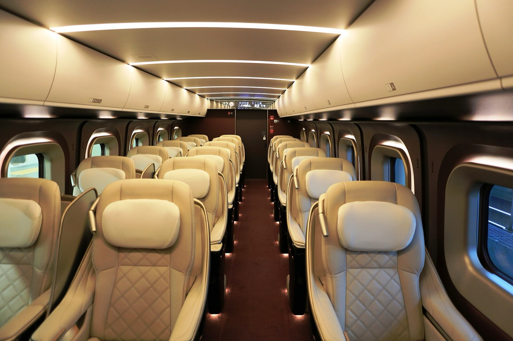
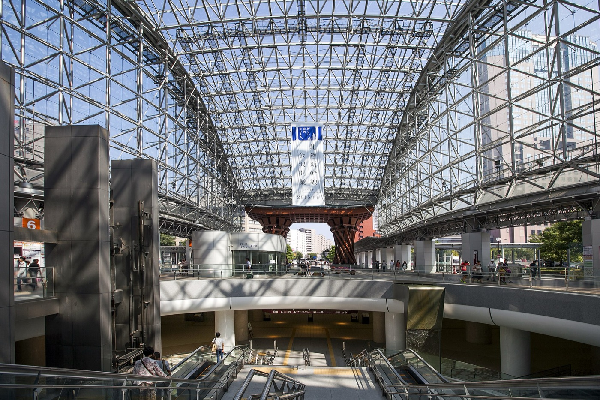
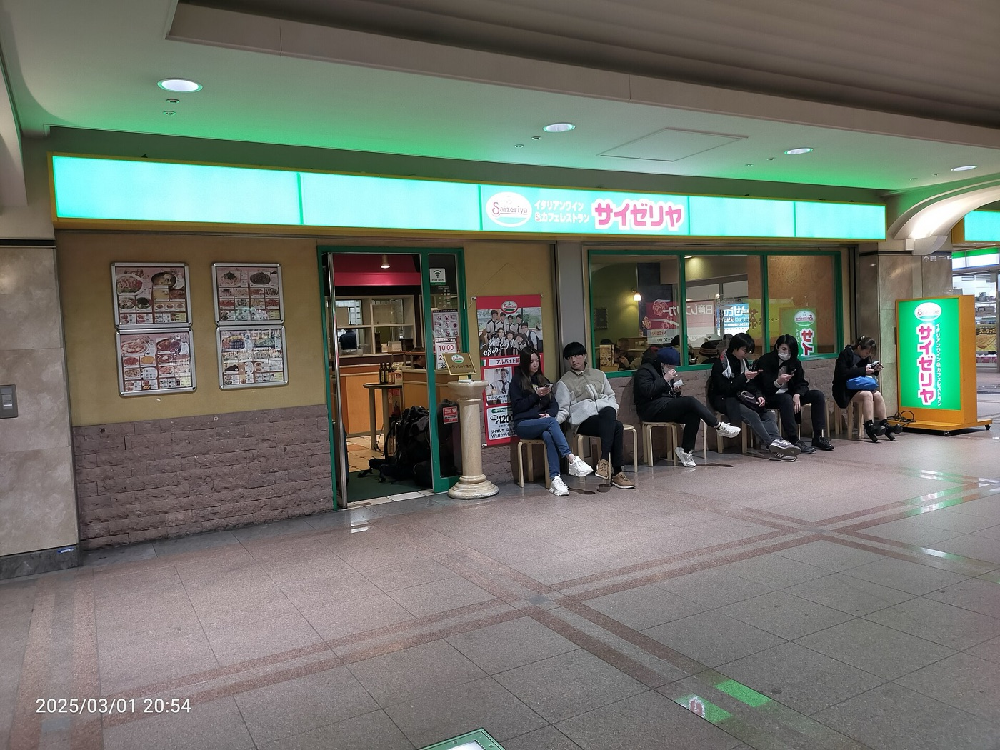
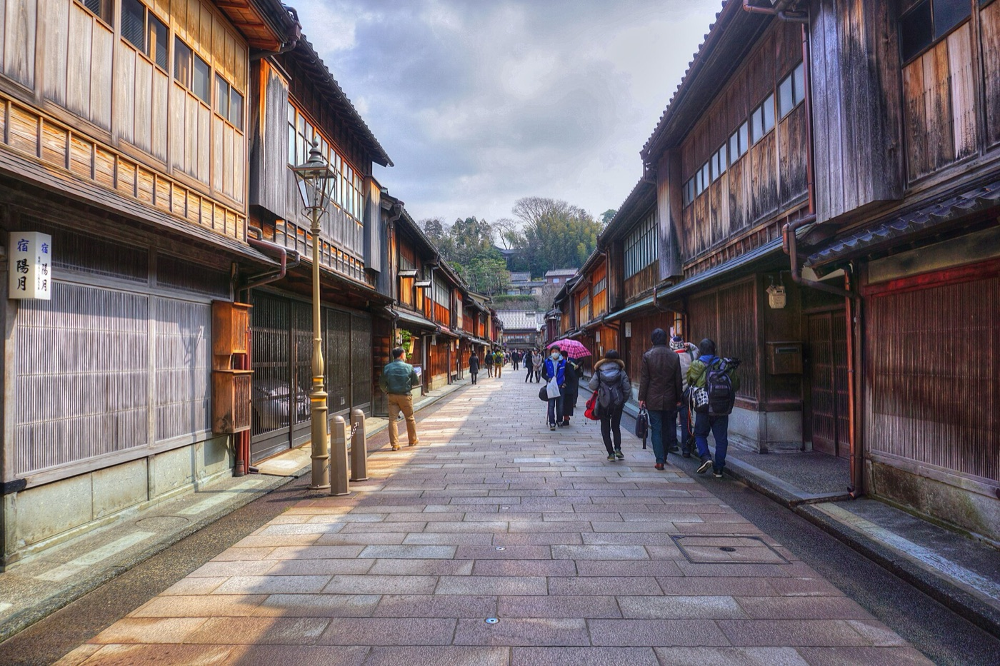
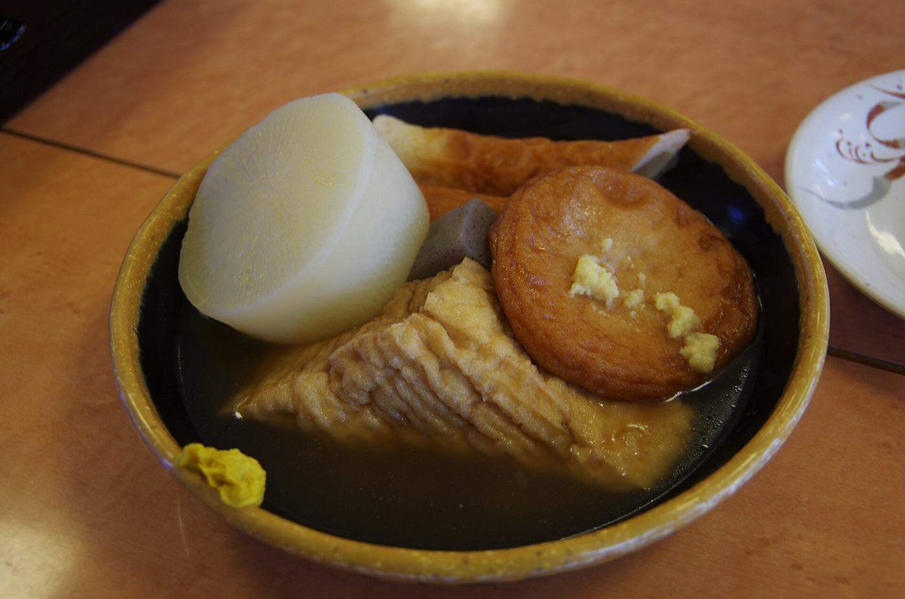
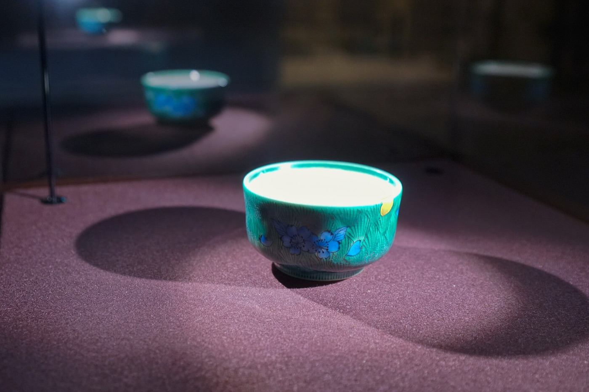

ゆりと 金沢で遊ぶ

- 15日の車
- 9〜19時ガッツ 予約ずみ
- Mozu展
- ¥1,50021美・当日券
- テルメ金沢
- ¥1,1006:00〜翌3:00
下にスクロールで1日目 → 2日目
新幹線は買ってあります

行きも帰りも佑樹が購入ずみ。行きは14日の朝いちばんで金沢に入って、そのまま能登のミートアップへ。帰りは16日の朝7時すぎ。シェアハウスから駅まで歩いて5分なので、ゆりの9時のツアーにも響きません。
- 1行き 9/14(月)かがやき501号 東京 6:16 → 金沢 8:43
- 2帰り 9/16(水)かがやき502号 金沢 7:03 → 東京 9:32
8:43に金沢に着く

着いてすぐ、東口で能登ミートアップの車に乗ります。Airbnbのホストが集まって能登をまわる一日で、金沢に戻るのは19時から20時ごろ。この日の昼間、ゆりは自分の予定を入れて大丈夫です。
- 18:43 金沢着かがやき501号
- 29:10 東口ピックアップ能登をめぐるミートアップ（Airbnb）
- 319〜20時 金沢で解散解散したらすぐLINEします
19:30からサイゼでミートアップ

能登から戻ったら、19:30からサイゼリヤでホストのミートアップ。ゆりもここから合流。終わったらシェアハウスへ。
- 119:30 サイゼリヤ場所は当日LINEで送ります
- 2泊まる14日も15日もゆりのシェアハウス
サイゼのあとに一杯
月曜の夜。駅の近くで済ませるなら日航ホテル29階の夜間飛行、片町まで出るなら倫敦屋かコハク・バー。どれも月曜営業。
- 1夜間飛行（ホテル日航金沢 29F）駅から徒歩3分。金沢城側の夜景。17:30〜24:00・29席。営業日が限られることがあるので当日電話 076-234-1281
- 2倫敦屋酒場（片町）1969年創業。シングルモルトの棚が壁一面。月〜木 17:30〜24:00
- 3コハク・バー（片町）8席の小箱。季節のフルーツカクテル。17:00〜翌2:00・不定休 076-234-5898
- 4帰り道鼓門のライトアップは0:00まで。アパスパ金沢駅前は24:00まで（最終受付23:00）
Mozuのちいさな世界へ
ゆりが今朝送ってくれた3つの案で組みました。まず金沢21世紀美術館のMozuミニチュア展。ほぼ全作品が撮影OKで、雨の日にちょうどいい屋内。9時に駅前で車を受け取って、21美の駐車場へ。
- 19:00 ガッツレンタカー 金沢駅前店予約ずみ。運転は佑樹
- 210:00 Mozuミニチュア展市民ギャラリーA。10:00〜18:00・会期中無休・当日¥1,500（前売¥1,200）
- 312:00 お昼広坂か片町で。ゆりの行きたい店で
テルメ金沢でゆっくり

午後はテルメ金沢。西インターそばの大きい温浴施設で、21美から車で20分。天然温泉とオートロウリュのサウナ、休憩スペースも広いので、雨の午後をまるごと過ごせます。
- 114:00 テルメ金沢（松島町）6:00〜翌3:00・無休・大人¥1,100・駐車場無料。タオルは館内で借りられる
- 218:30 車を返す駅前店まで約15分。19:00まで。ガソリンは満タンに
片町で夜ごはんとバー

車を返したら片町へ。火曜なので三幸と源左ェ門が開いています。いたるは日曜休なので火曜もOK。食べたら歩いてバーへ。
- 1三幸 本店金沢おでん。16:00〜21:30LO・火曜営業・¥3,000〜4,000
- 2源左ェ門 片町店近海の魚と郷土料理。17:00〜23:00 LO22:30・月曜休・¥4,000〜6,000
- 3いたる 本店（柿木畠）石川の地酒と魚。カウンター17席。17:30〜23:30・日曜休・¥4,000〜6,000
- 4まごころ金沢おでんと海鮮。17:00〜翌0:30・無休
- 5そのあと倫敦屋酒場（〜24:00）かコハク・バー（〜翌2:00）。どちらも片町で徒歩圏
追加でこんなのも

佑樹からの追加案。酒・トマト・着物で。雨の火曜にやっていて、車があれば全部いける。入れなくていい、おまけ。
- 1加賀友禅会館（小将町）着物の柄を自分で彩色する体験¥1,650〜。入館¥500。9:00〜17:00・水曜休
- 2金沢地酒蔵（百番街あんと）石川の全酒蔵の酒がそろう店。試飲の自販機と地酒バー。8:30〜20:00（バーLO19:30）・無休
- 3福光屋 金沢店（石引）蔵元直営の唎き酒。BARは17:30LO
- 4トマト柄の器さがし（百番街あんと）九谷焼の店で赤絵かトマト柄の豆皿。鏑木商舗 8:30〜20:00。16日の朝、新幹線の前でも
- 5カラオケ（片町）7月にゆりが「一緒に行きたい」と言っていたやつ
- 6九谷光仙窯（野町）絵付け¥1,650〜・ろくろ¥5,500。予約なし。9:00〜17:00
- 7湯涌温泉 総湯 白鷺の湯テルメの代わりに山の温泉なら。金沢から車30分。7:00〜22:00・第3木曜休・¥490
7:03のかがやきで帰る
シェアハウスから駅まで歩いて5分。6:40に出れば間に合います。ゆりは9時からツアー。
- 16:40 出発歩いて5分
- 27:03 金沢発かがやき502号 → 東京 9:32
- 3ゆり9:00からツアー
旅の記録
- 写真
- 3枚
- 動画
- 1本
- 場所
- 2GPSのある地点
行ったところ
車は予約ずみ
ガッツレンタカー金沢駅前店。9/15の朝9時に受け取って、同じ日の19時に返します。手続きと運転は佑樹。
返却は19:00まで。テルメ金沢から駅前店までは車で約15分。ガソリンは返す前に満タンに。
持ちもの
- 傘15日は一日雨
- お風呂セットテルメ金沢。タオルは館内で借りられる
- 免許証佑樹。運転する人
- 新幹線のeチケット佑樹。往復とも購入ずみ
- 佑樹新幹線・レンタカー（どちらも予約ずみ）／運転
- ゆり15日の案（Mozu展・テルメ金沢）とお昼の店
それでは 9月14日の夜に
予定が変わったら佑樹に言ってください。このページも直します。
写真: Wikimedia Commons（各撮影者・CC）。営業時間・料金は2026年9月時点の各公式サイトとレンタカーの予約メール。天気は9/13時点の tenki.jp の予報。